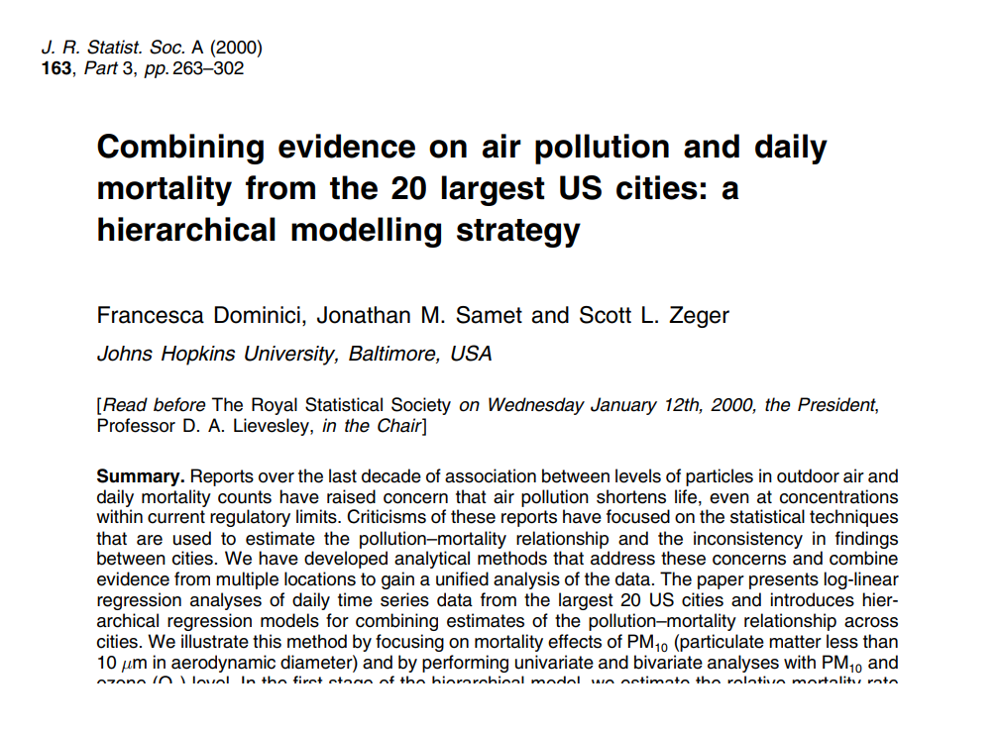
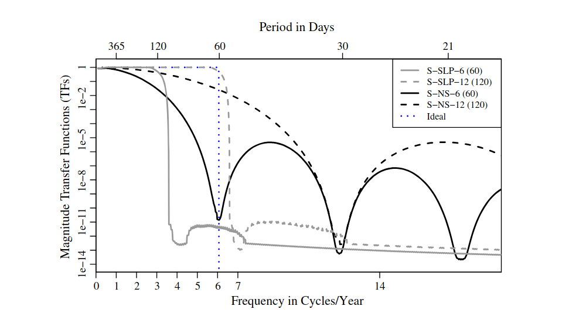
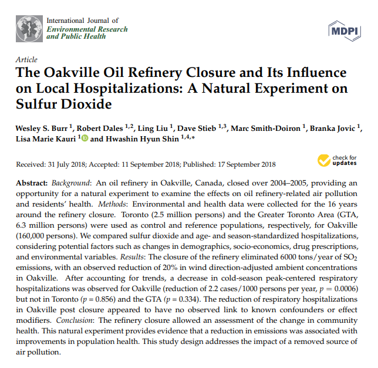
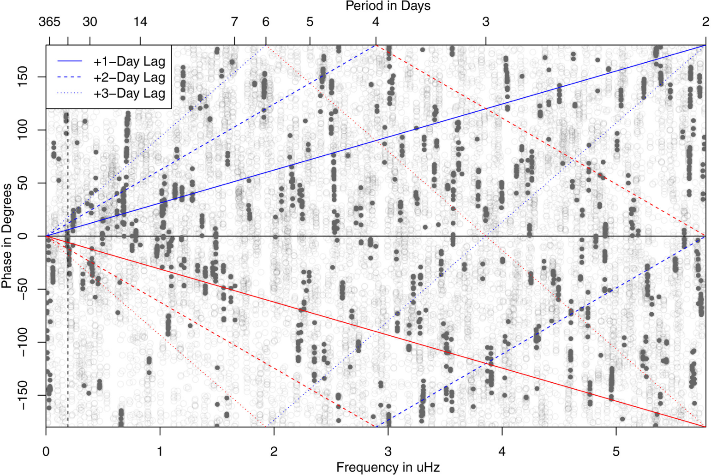
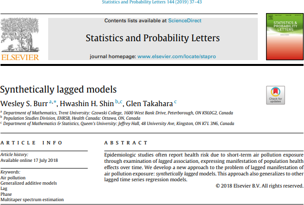
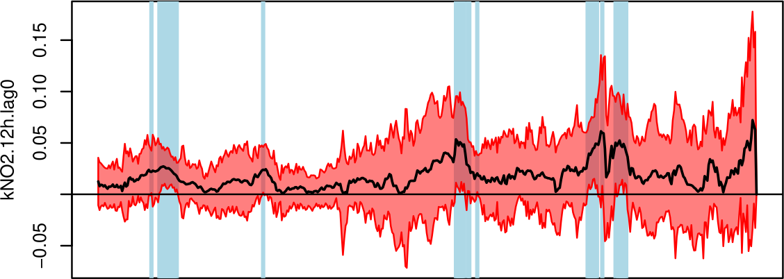
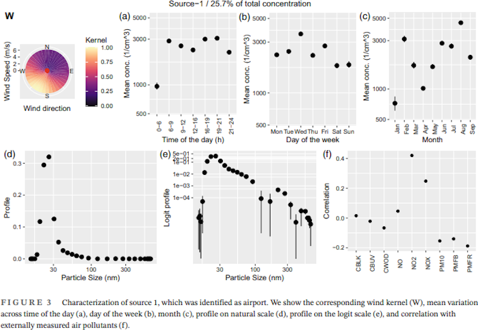
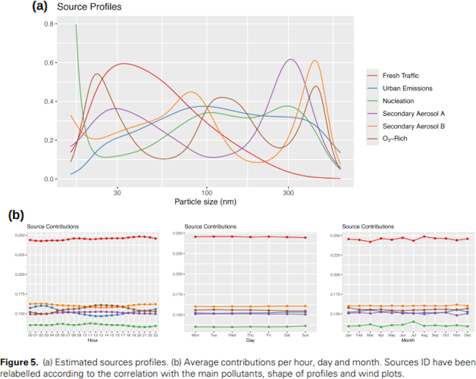

Some Statistical Problems Inspired by Air Pollution
for the Department of Statistical Sciences, University of Toronto
Associate Professor & Chair
Department of Mathematics & Statistics
Trent University
Thank you for having me
- Who am I?
- Air Pollution: the Case for Human Impact
- Interesting Problems
Who Am I?
- PhD from Queen’s University in statistics (2012), under David J. Thomson
- joined Trent University in 2016, became Chair of Math & Stats in 2022
- do a lot of random things that are all connected through the lens of “interesting data”, with a theme of time series and statistical signal processing
Air Pollution?
As I mentioned in the abstract for the talk, today I’d like to talk about a series of connected problems in applied statistics, all stemming from the question:
Given broad population-level measurements of air pollution and climate, and aggregate population-level health counts, what can we estimate about the acute impacts of air pollution exposure on human health?
Air Pollution Exposure
First, a little history lesson. Why do we think air pollution would impact human health at all?
This may seem obvious, but obvious things are tricky!
Coal Miners
- Black Lung Disease
- long-term exposure to coal dust
- similar to silicosis and asbestosis
- tens of thousands of deaths, but very delayed
- chronic exposure

Great Smog of London (1952)
- temperature inversion: high-pressure system and cold weather
- trapped all of the heavy pollution from coal burning and diesel vehicles
- incredibly thick smog
- thousands of deaths
- acute exposure
Growing Evidence
The past two are extreme examples. Weight of evidence grew across the 20th century that exposure to atmospheric air pollution could have similar detrimental effects. This was accentuated by increased research into the long-term impacts of tobacco smoking.
Acute exposure to very, very high levels of air pollution is bad. Chronic exposure to high levels of air pollution is bad.
Toxicology-Style Question: what is the safe dose?
A Question of Measurement
We’re statisticians.
Our first instinct when faced with a problem is to gather data.
(or design a study … to gather data).
What data makes sense to try to measure the dose-response of exposure to air pollution?
Questions to Answer
- what, exactly, do we mean by “acute”?
- what is the unit of study?
- what is the dose, and how is it measured?
- … can we do this outside of controlled (chamber) studies?
These lead us to ecological studies: it’s just too expensive to do anything else.
- population level “health” metric
- population level “exposure” metric
- whack them in a model, hope you’re measuring something meaningful and matching your definition of “acute”
First Major Unified Result
There was a lot of research done by really good statisticians in the 1980s and 1990s on these questions. The first unified result that set a standard for the field came out of Francesca Dominici’s postdoctoral work at Hopkins from 1998-2000:

What Did This Paper Provide?
- population-level average exposures using a network of ground-source monitors
- population-level counts of health outcomes (e.g., deaths due to ICD-10 J-causes - pulmonary)
- the use of GAMs to measure association
- the use of Bayesian partial pooling to produce regional and national estimates
- some time series influences - especially suggestion that what was being done fit under the definition of filters
Let’s Start Here
This is the launching-off point where I largely got involved in this field.
There were another half dozen fundamental papers between 2000 and 2010, mostly concerned with expanding this framework, and fine-tuning the model to prevent multicollinearity1, but this is the framework I started working with in graduate school.
Filters
What is a Filter, Exactly?
One of the questions I first considered was this idea (from Dominici, Samet, Zeger, Peng, etc.) that including cubic regression splines in a GAM could be considered a filter.
- I thought I knew what a filter is (from the spectrum estimation point of view)
- This is an odd definition of a filter
- So what is it doing?
Turns Out …
… if you think of these fixed basis splines as a filter, they are … but a very poor one!
We can do better.
Apply the last 30 years of spectrum estimation theory, use optimal basis functions (prolate spheroidal sequences), sprinkle in a smidge of multitaper spectrum estimation inspiration and …
Spectral View
Paper
Natural Experiments
Take the Framework, Apply it to One-Off Events
You know the saying: once you have a hammer, everything looks like a nail.
Can we take this framework and way of thinking about air pollution exposure, and expand it further by considering it as a tool for exploring natural experiments?
(rhetorical question)
Oil Refineries
- Oil refineries are known as fairly stinky sites.
- While controlled, there’s a lot of particulate matter and volatile organics that are emitted in the process of cracking oil to make gasoline and byproducts
- If we use the earlier framework, can we look at the “before” and “after” of a plant closure - as a natural experiment, what effects are observable?
Paper

What’s With Lag?
The Question of Lag
When building models in this framework, one of the most common things to do is to lag the predictors. Why?
- justified via biological mechanism delay
- gives higher associations
However … it feels very ad hoc.
Phase As Lag
Coming at this problem from a time series point of view1, lagging the predictors is somehow trying to align the stuctured of the model with the autocovariance inherent in the data.
- but the filters are supposed to be removing the long timescale structure
- supposedly the autocorrelation function is near zero2
- what exactly is driving the association?
One of My Favourite Plots

Paper

Transfer Function Models
Rewriting the Book
Everything mentioned so far fits into the framework regularized by Dominici et al. between 1998 and 2006. Why?
- it’s what the field uses, and change is hard
- it works1
But can we do better if we rethink the entire modeling paradigm?
What is the question again?
Given a restriction of ecological data1, what do we have?
- daily counts of some health outcome2
- corresponding daily exposure proxies
- corresponding daily covariates
And the question?
Given broad population-level measurements of air pollution and climate, and aggregate population-level health counts, what can we estimate about the acute impacts of air pollution exposure on human health?
Transfer Function Models
As you might have gathered from these examples, I often look at problems through the lens of a frequency-domain representation. So:
- an association is a measurement of relationship between two time series: a predictor1 and a response.
- why should that association be linear?
- obviously the lags matter
In the applied fields of oceanography, magnetotellurics, and helioseismology, spectra are often used and the map between them is the objective function. These functions transfer power from one to the other, so … transfer function models.
Current Research
This is a currently open research project with Glen Takahara (Queen’s), David Riegert (Trent & Queen’s), and Hwashin H. Shin (Health Canada).
- the estimation of the transfer functions has been solved - robustly, at that!
- the interpretation is proving … difficult1
Plot
Jackknifed Transfer Function Between NO2 and All-Cause Mortality.
Honourable Mention
Source Apportionment
Project led by Marta Blangiardo and Monica Pirani.
Baerenbold et al., 2023
Source Apportionment
Martínez-Hernández et al., 2024
Conclusions
Applied Problems can be Fun
- I enjoy applied problems.
- I enjoy developing methods and algorithms for practitioners.
- This question of air pollution and health that I first considered in 2010 has proved to be a rich vein to mine, over and over, with some pretty fun methodologies and algorithms along the way
Open Problems
- more personalized exposure1
- better (spatiotemporal) modeling of exposure at a population level2
- change your source measurements: data fusion3
- the question of pooling and aggregation of risk4
- extreme events as “acute”?
- can we use machine learning models in an effective way to do any of this?
- multiple pollutants simultaneously5
\(\;\)